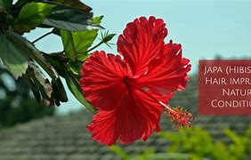

Basonym of Drug
Japa
Main Synonym
- Trisandhya
- Oundrapushpa
- Java Pushpa
- Japapushpa
- Rakta Pushpa
- Arka Priya
- Harivallabha
Regional Name
- Bengali: Jaba
- Gujarati: Jasud
- Hindi: Gudahala, Gudhal
- Tamil: Semaparuti
- Telugu: Dasanamu
- English: Hibiscus
Botanical Name
Hibiscus rosa-sinensis
Family
Malvaceae
Classification (Gana)
Bhavaprakash Nighantu: Pushpa Varga
Raj Nighantu: Karveeradi Varga
External Morphology
5-7 feet high shrub
Useful Parts
Important Phytoconstituent
- Methyl-sterculate
- Beta-sitosterol
- Aspartic Acid
Rasa Panchak
- Rasa: Kashaya, Tikta
- Guna: Laghu, Ruksha
- Virya: Shita
- Vipaka: Katu
Action
- Kaphapittahara (Balances Kapha and Pitta doshas)
Therapeutic Indication
- Hridya (Cardio-tonic)
- Keshya (Good for hair)
- Rasayana (Rejuvenating)
- Sangrahi (Reduces excessive discharges)
Therapeutic Uses
- Raktapitta: Hibiscus flower with honey is useful in bleeding disorders.
- Hridroga: Hibiscus flower with warm cow milk and rock sugar in the morning is beneficial in cardiac diseases.
- Arsha: Hibiscus flower paste with ghee is beneficial in bleeding piles.
Dose
- Flower: 5-10 gm
- Leaf Powder/Paste: 3-5 gm
Formulations
- Ptrangasava
- Japakusumadi Yoga
Adverse Effect
Not Known
Remedial Measure
Not required